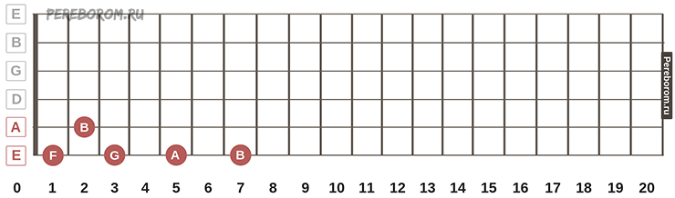

В этом разделе вы сможете узнать расположение нот Малой октавы

Как мы ранее говорили, названий нот существует всего 7
Что же нужно запомнить? Конечно же расположение нот Малой октавы.
Малая окатва расположена на 6 и 5 струне, при этом в ней существует всего 5 нот: Ми, Фа, Соль, Ля, Си.
Малая октава - самая легкая для изучения октава. Итак, разберемся, на каких струнах и ладах распологаются те или иные ноты.
Начнем с 6 струны. Если не зажимать никакой лад, мы, как вы уже знаете, услышите ноту Ми. Далее мы будем перескакивать через лад. Зажав 1 лад 6 струны, мы услышим ноту Фа. Соостветственно нота Соль на 3 ладу, нота Ля на 5 ладу и нота Си на 7 ладу.
На 5 струне расположены всего 2 ноты - это нота Ля (открытая струна) и нота Си (второй лад).
материалы рекомендуется записывать , для лучшей продуктивности
Начать